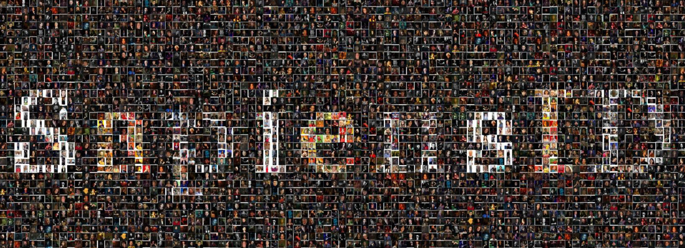

Feng Liu
Assistant Professor
Department of Computer Science
Drexel University
liufeng2915@gmail.com; fl397@drexel.edu
Recruiting Ph.D. students and interns! I am currently seeking highly motivated Ph.D. students. If you are interested, please apply here.
Feng Liu is an Assistant Professor in the Department of Computer Science at Drexel University. Previously, he was a postdoctoral researcher at Michigan State University, working under the guidance of Prof. Xiaoming Liu.
Research interests:
- 3D Computer Vision: 3D object/scene understanding; 3D generation; VR/AR; 3D vision+language understanding
- AI + X: Education; Healthcare
- 3D Human Digitization: Modeling, reconstruction and rendering; Biomechanics
- Generative AI: Explainability, generalization and controllability in generative models; DeepFake detection
- Biometric Recognition: Face and gait recognition; Person re-identification
News
| Jun 25, 2025 | Our paper “HAMoBE” is accepted by ICCV 2025. |
|---|---|
| May 20, 2025 | I am serving as an Area Chair for BMVC 2025, ACM MM 2025, FG 2025, IJCNN 2025. |
| Feb 26, 2025 | Two papers, “SapiensID” and “AG-VPReID,” have been accepted by CVPR 2025! |
| Jul 1, 2024 | Our paper “Open-Set Biometrics: Beyond Good Closed-Set Models” is accepted by ECCV 2024. |
| Jun 7, 2024 | I’ll be attending CVPR 2024 in person from June 16th to 22nd. Happy to meet up! |
| Feb 26, 2024 | Three papers are accepted by CVPR 2024! |
| Dec 30, 2023 | I’ll be attending WACV 2024 in person from January 4th to 8th, presenting a poster on our FarSight paper. Additionally, I will participate as a speaker at the Efficient Learning for Face Analysis (ELFA) workshop, delivering a talk on ‘AIGC for Biometrics’. |
| Dec 5, 2023 | I will be attending NeurIPS 2023 in person from December 13th to 16th. Feel free to talk; I’ll be happy to engage! |
| Aug 15, 2023 | Our paper “FarSight: A Physics-Driven Whole-Body Biometric System at Large Distance and Altitude” is accepted by WACV 2024. |
| Jul 14, 2023 | Our paper “Learning Clothing and Pose Invariant 3D Shape Representation for Long-Term Person Re-Identification” is accepted by ICCV 2023. |
| Jul 4, 2023 | I am serving as an Area Chair for FG 2024. |
| Feb 27, 2023 | Our paper “DCFace: Synthetic Face Generation with Dual Condition Diffusion Model” is accepted by CVPR 2023. |
| Feb 2, 2023 | Our paper “Learning Implicit Functions for Dense 3D Shape Correspondence of Generic Objects ” is published in IEEE TPAMI. |
| Sep 14, 2022 | Our paper “Cluster and Aggregate: Face Recognition with Large Probe Set” is accepted by NeurIPS 2022. |
| Jul 8, 2022 | Our papers “2D GANs Meet Unsupervised Single-View 3D Reconstruction” and “Controllable and Guided Face Synthesis for Unconstrained Face Recognition” are accepted by ECCV 2022. |
| Sep 28, 2021 | Our paper “Voxel-based 3D Detection and Reconstruction of Multiple Objects from a Single Image” is accepted by NeurIPS 2021. |
| Sep 1, 2021 | Our paper “Shape My Face: Registering 3D Face Scans by Surface-to-Surface Translation” is published in IJCV. |
| Mar 3, 2021 | Our paper “Fully Understanding Generic Objects: Modeling, Segmentation, and Reconstruction” is accepted by CVPR 2021. |
| Sep 25, 2020 | Our paper “Learning Implicit Functions for Topology-Varying Dense 3D Shape Correspondence” is accepted by NeurIPS 2020 as oral presentation (1.1% acceptance rate). |
Selected Publications
 ICCV
HAMoBE: Hierarchical and Adaptive Mixture of Biometric Experts for Video-based Person ReIDIEEE/CVF International Conference on Computer Vision (ICCV) , 2025
ICCV
HAMoBE: Hierarchical and Adaptive Mixture of Biometric Experts for Video-based Person ReIDIEEE/CVF International Conference on Computer Vision (ICCV) , 2025- arXivPerson Recognition at Altitude and Range: Fusion of Face, Body Shape and GaitarXiv preprint (arXiv) , 2025
-  CVPRSapiensID: Foundation for Human RecognitionIEEE/CVF Computer Vision and Pattern Recognition (CVPR) , 2025
- CVPRSecuring the Skies: A Comprehensive Survey on Anti-UAV Methods, Benchmarking, and Future DirectionsIEEE/CVF Computer Vision and Pattern Recognition (CVPR) , 2025
 ECCV
Open-Set Biometrics: Beyond Good Closed-Set ModelsEuropean Conference on Computer Vision (ECCV) , 2024
ECCV
Open-Set Biometrics: Beyond Good Closed-Set ModelsEuropean Conference on Computer Vision (ECCV) , 2024 CVPR
Distilling CLIP with Dual Guidance for Learning Discriminative Human Body Shape RepresentationIEEE/CVF Computer Vision and Pattern Recognition (CVPR) , 2024
CVPR
Distilling CLIP with Dual Guidance for Learning Discriminative Human Body Shape RepresentationIEEE/CVF Computer Vision and Pattern Recognition (CVPR) , 2024 CVPR
KeyPoint Relative Position Encoding for Face RecognitionIEEE/CVF Computer Vision and Pattern Recognition (CVPR) , 2024
CVPR
KeyPoint Relative Position Encoding for Face RecognitionIEEE/CVF Computer Vision and Pattern Recognition (CVPR) , 2024- CVPRTIGER: Time-Varying Denoising Model for 3D Point Cloud Generation with Diffusion ProcessIEEE/CVF Computer Vision and Pattern Recognition (CVPR) , 2024
 CVPR
CVPR